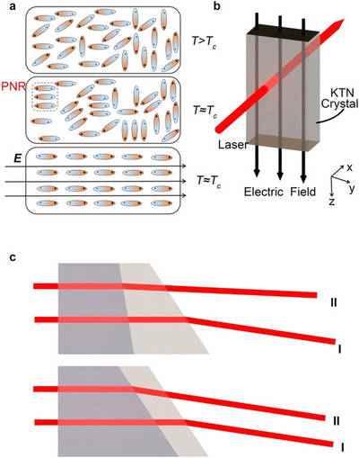

2016-11-03 - Nº 79

Editorial
Esta é a Newsletter Nº 79 que se apresenta com o mesmo formato que as anteriores. Se gostar da Newsletter partilhe-a!
Todas as Newsletters encontram-se indexadas no link.
Esta Newsletter tem os seguintes tópicos:
A 3 de Novembro de 1957 a URSS lançava o Sputnik 2 e a bordo do mesmo ia a cadela Laika. Tratou-se da primeira nave a ser lançada no espaço com um ser vivo. Tinha 4 metros de altura, a base tinha 2 metros de diâmetro e pesava cerca de 500 kg. Esteve no espaço cerca de 162 dias. Nas noticias da semana foi lançado em open source um novo sistema operativo construído de raíz designado por Minoca OS. É um sistema operativo com uma interface tipo POSIX e corre atualmente nas arquitecturas x86 e ARM. A China começou a construir o seu primeiro super-computador exascale. Com capacidade de operar a 1000 Petaflops terá 10 vezes a capacidade do actual detentor do titulo do super-computador mais rápido - o Sunway TaihuLight. Ficámos também a saber que uma companhia inglesa está a desenvolver um veiculo destinado ao transporte de mercadorias. Este é feito com materiais compósitos que reduzem significativamente o peso do veiculo e cuja propulsão é feita com motores eléctricos. A companhia que está por detrás deste fabrico é a Charge. A Lattice Semiconductors vai ser adquirida pela Canyon Bridge Capital Partners, Inc.
Na Newsletter desta semana apresentamos diversos projetos de maker assim como alguns modelos 3D que poderão ser úteis.
 João Alves ([email protected])
João Alves ([email protected])
O conteúdo da Newsletter encontra-se sob a licença  Creative Commons Attribution-NonCommercial-ShareAlike 4.0 International License.
Creative Commons Attribution-NonCommercial-ShareAlike 4.0 International License.
Novidades da Semana ^
Minoca OS: A new open source operating system
"Today were thrilled to announce that Minoca OS has gone open source. We are releasing the entirety of the Minoca OS source code under the GNU GPLv3. Were excited to build a community of users and developers around this new operating system, and we need help. You can check out the source at https://github.com/minoca/os . You can also check out our repository of third party source packages here. If youre just looking to download the latest stable binaries of Minoca OS, head to the download page." [...]
A billion billion calculations per second: where no computer has gone before
"China has started to develop its first exascale computer capable of performing a billion billion calculations per second, as the country steps up efforts to stay in the lead of the global supercomputer race. The high-performance computer, if it can be built by 2020, will boost the countrys scientific capability and possibly maintain its prestige of housing the worlds fastest calculating system. The exascale supercomputer will operate at 1,000 petaflops, or quadrillion calculations per second, 10 times the speed of Chinas TaihuLight, which topped a 2016 global supercomputer speed list." [...]
Delivering in your city from 2017 british auto tech company charge reveals new electric truck
"Businessman and entrepreneur Denis Sverdlov today revealed the future of electric trucks live on stage at a London technology conference, showing the latest model in a range of electric vehicles being developed for sale in 2017 by his automotive technology company Charge. The vehicles are built using revolutionary ultra-lightweight composite materials that significantly reduce the weight of the vehicle and by combining this technology with Charges custom built hardware, including power electronics and motors, they have been able to reduce the cost of operating by more than 50%. In an industry which is driven by price and weight this will help to transform the highly complex logistics sector." [...]
Outras Notícias
- Lattice Semiconductor to be Acquired by Canyon Bridge Capital Partners, Inc. for $1.3 Billion
- Ubuntu Core 16 delivers foundation for secure IoT
- Did Early Earth Spin On Its Side?
- Samsung Expands its Advanced Foundry Offerings with 14LPU and 10LPU Processes
- Scale from value line to high performance with TI's new unified memory 16-bit microcontrollers (MCUs)
Ciência e Tecnologia ^
Making high-performance batteries from junkyard scraps
"Take some metal scraps from the junkyard; put them in a glass jar with a common household chemical; and, voil, you have a high-performance battery. 'Imagine that the tons of metal waste discarded every year could be used to provide energy storage for the renewable energy grid of the future, instead of becoming a burden for waste processing plants and the environment,' said Cary Pint, assistant professor of mechanical engineering at Vanderbilt University. To make such a future possible, Pint headed a research team that used scraps of steel and brass two of the most commonly discarded materials to create the world's first steel-brass battery that can store energy at levels comparable to lead-acid batteries while charging and discharging at rates comparable to ultra-fast charging supercapacitors." [...]
3D-printed permanent magnets outperform conventional versions, conserve rare materials
"Researchers at the Department of Energy's Oak Ridge National Laboratory have demonstrated that permanent magnets produced by additive manufacturing can outperform bonded magnets made using traditional techniques while conserving critical materials. Scientists fabricated isotropic, near-net-shape, neodymium-iron-boron (NdFeB) bonded magnets at DOE's Manufacturing Demonstration Facility at ORNL using the Big Area Additive Manufacturing (BAAM) machine. The result, published in Scientific Reports, was a product with comparable or better magnetic, mechanical, and microstructural properties than bonded magnets made using traditional injection molding with the same composition. The additive manufacturing process began with composite pellets consisting of 65 volume percent isotropic NdFeB powder and 35 percent polyamide (Nylon-12) manufactured by Magnet Applications, Inc. The pellets were melted, compounded, and extruded layer-by-layer by BAAM into desired forms." [...]
Diamonds Arent Forever: Sandia, Harvard team create first quantum computer bridge
"By forcefully embedding two silicon atoms in a diamond matrix, Sandia researchers have demonstrated for the first time on a single chip all the components needed to create a quantum bridge to link quantum computers together. People have already built small quantum computers, says Sandia researcher Ryan Camacho. Maybe the first useful one wont be a single giant quantum computer but a connected cluster of small ones. Distributing quantum information on a bridge, or network, could also enable novel forms of quantum sensing, since quantum correlations allow all the atoms in the network to behave as though they were one single atom. The joint work with Harvard University used a focused ion beam implanter at Sandias Ion Beam Laboratory designed for blasting single ions into precise locations on a diamond substrate. Sandia researchers Ed Bielejec, Jose Pacheco and Daniel Perry used implantation to replace one carbon atom of the diamond with the larger silicon atom, which causes the two carbon atoms on either side of the silicon atom to feel crowded enough to flee. That leaves the silicon atom a kind of large landowner, buffered against stray electrical currents by the neighboring non-conducting vacancies. Though the silicon atoms are embedded in a solid, they behave as though floating in a gas, and therefore their electrons response to quantum stimuli are not clouded by unwanted interactions with other matter." [...]
A Tiny Machine
"In 1959 renowned physicist Richard Feynman, in his talk Plenty of Room at the Bottom, spoke of a future in which tiny machines could perform huge feats. Like many forward-looking concepts, his molecule and atom-sized world remained for years in the realm of science fiction. And then, scientists and other creative thinkers began to realize Feynmans nanotechnological visions. In the spirit of Feynmans insight, and in response to the challenges he issued as a way to inspire scientific and engineering creativity, electrical and computer engineers at UC Santa Barbara have developed a design for a functional nanoscale computing device. The concept involves a dense, three-dimensional circuit operating on an unconventional type of logic that could, theoretically, be packed into a block no bigger than 50 nanometers on any side." [...]
Engineers develop new magnetic ink to print self-healing devices that heal in record time
"A team of engineers at the University of California San Diego has developed a magnetic ink that can be used to make self-healing batteries, electrochemical sensors and wearable, textile-based electrical circuits. The key ingredient for the ink is microparticles oriented in a certain configuration by a magnetic field. Because of the way theyre oriented, particles on both sides of a tear are magnetically attracted to one another, causing a device printed with the ink to heal itself. The devices repair tears as wide as 3 millimetersa record in the field of self-healing systems." [...]
A new twist on airplane wing design
"When the Wright brothers accomplished their first powered flight more than a century ago, they controlled the motion of their Flyer 1 aircraft using wires and pulleys that bent and twisted the wood-and-canvas wings. This system was quite different than the separate, hinged flaps and ailerons that have performed those functions on most aircraft ever since. But now, thanks to some high-tech wizardry developed by engineers at MIT and NASA, some aircraft may be returning to their roots, with a new kind of bendable, morphing wing. The new wing architecture, which could greatly simplify the manufacturing process and reduce fuel consumption by improving the wings aerodynamics, as well as improving its agility, is based on a system of tiny, lightweight subunits that could be assembled by a team of small specialized robots, and ultimately could be used to build the entire airframe. The wing would be covered by a skin made of overlapping pieces that might resemble scales or feathers." [...]

Penn State researchers find way to increase scanning speed
"A major technological advance in the field of high-speed beam-scanning devices has increased the speed of 2D and 3D printing by up to 1000 times, according to researchers in Penn States College of Engineering. Using a space-charge-controlled KTN beam deflector a kind of crystal made of potassium tantalate and potassium niobate with a large electro-optic effect, researchers have found that scanning at a much higher speed is possible." [...]
Modelos 3D ^
Com a disponibilidade de ferramentas que permitem dar azo a nossa imaginação na criação de peças 3D e espaços como o thingiverse para as publicar, esta rubrica apresenta alguns modelos selecionados que poderão ser úteis.
Toy Printing Press
"Toy Printing Press. Put some finger paint on the first roll (tip: wrap with some Cloth) then insert the stamp-slider until the stop position (given by lever), push a paper strip through the intake until it goes through the slit of the slider, then turn the knob and print." [...]
DIY Clamp (openscad)
"Do not use clamps with square corners! Rounded corners in twice stronger then square corners! customize your own sizes in code" [...]
Pcb stand
"Inspired by the amazing PCB Workstation (http://www.thingiverse.com/thing:801279) I used the PCB holder part and simplified the base for quick printing. Instead of the butterfly nuts I used this knob. Keep in mind, the short legs base can hold max. 9x3 cm between the claws." [...]

Archimedean spiral generator
"Archimedean spiral is the base of Spiral moving fish. The equation of Archimedean spiral is r = a + b * theta. If you just increase theta with the same amount, the distance between each segment of the moving fish would also be increased. In order to equally spaced each segment, I need to find out all angles between each segment. That's what the find_parent_angles module does in the .scad file. For more precisely controlling models between each segment, I also divide all parent angles found by the find_parent_angles module into several sub angles which may be controlled by the children_per_step parameter." [...]
Projetos Maker ^
Diversos Projetos interessantes.
Led Matrix Arduino Clock
"This a week-end project. Six 8x8 led matrix, Arduino nano and Real Time Clock. It just gives time. No fancy alarm or display mode even though I wanted to do so in the begining. The RTC clock is very precise so I don't need buttons to adjust time. Twice a year, just need to reupload the program to adjust time with DST." [...]
A credit card sized Ethernet Arduino compatable controller board
"I love the Arduino as a simple and accessible controller platform for many varied projects. A few months ago, a purchased an Ethernet shield for my Arduino controller to work on some projects with a mate of mine - it was a massive hit - for the first time, I could control my projects remotely using simple software. That got me thinking - The Arduino costs about $30AUD, and the Ethernet board cost about $30AUD as well. That is a lot of money - Could I make a simple, dedicated remote controller for much cheaper? Why Yes I could. Could I make it the size of a credit card? Why Yes - I could!!" [...]
Pringles Can Speaker
"Pringles occasionally run a promotion where you get a speaker for the can. But why bother with all that, when you can make your own speaker from the Pringles can." [...]
Convert a 3D PRINTER to LASER ENGRAVER | Under 40$
"What is up everybody, in this Instructable I am going to show you, how you can convert your 3D printer to a fully functional laser engraver for less that 40$" [...]
Automotive Remote Central Locking
"In this instructable, i will show you how to build your very own Remote Controlled Central Locking system. There are a number of different central locking/alarm systems you can buy at your local automotive spare parts retailer, but by using a fancy one for a week, i quickly determined that there were too many problems with the module, making it not very convenient. Having to unlock the car uniquely with the remote was one of the major problems i had with it as i wanted to be able be unlock the car using the key as well as with the remote without any hassle. This instructable will cover the design procedure only and not the installation process as each vehicle is different." [...]
Make an LED Candle You Can Blow Out
"How might we make an LED candle that you can actually blow out? That was a question my daughter and I had one evening, so we got online and started exploring different ways to sense wind. Along the way, we discovered a pretty nifty sensor that does exactly what we needed. That sensor is the center of this project." [...]
BUILD YOUR OWN CHEAP ANTENNA ANALYSER
"Ham radio is the use of radio frequency spectrum for purposes of non-commercial exchange of messages, wireless experimentation, self-training, etc. Developing a ham radio project may requires using an antenna analyser, a device that is used for measuring input frequency and impedance. There are many types of antenna analysers such as Anritsu VNA Master, RigExpert, MiniVNA, and others. But these analysers are very expensive to buy. They starts from $500 up to thousands of dollars and they are also hard to hack. This guide shows how to construct and use a DIY HF antenna analyzer using Arduino for less than $50. The project consists of three parts; a Microcontroller, AD9850 DDS module, and a VSWR Bridge." [...]
Smartphone controlled Arduino Robot
"Last time I showed how to hack an RC toy and make it into Arduino Bluetooth control car, This time is how you how to make a Smartphone Controlled Arduino Robot, if you are new to Robotics , you might consider using Arduino as its easy to learn flexible with huge examples to follow and with huge no. of chassis available it is easy for anyone to make a Robot." [...]
Use the Raspberry Pi Camera to Detect and Classify Objects in Pictures
"Use Google Cloud Vision on the Raspberry Pi to take a picture with the Raspberry Pi Camera and classify it with the Google Cloud Vision API. First, well walk you through setting up the Google Cloud Platform. Next, we will use the Raspberry Pi Camera to take a picture of an object, and then use the Raspberry Pi to upload the picture taken to Google Cloud. Finally, we can analyze the picture in the cloud, and the cloud will try to label the picture (tell us in text whats going on in the picture). Skynet here we come!" [...]
ESP8266 Geiger counter
"The ESP8266 is flashed with the MicroPython firmware, and the software PWM is used to drive the HV part of the circuit. The radiation and dose information will be available via a web interface, MQTT, maybe some lower level output like an UDP or ICMP packet on every particle detection." [...]
Building A 16x32 NeoPixel Display
"Earlier this year while attending a FabNow Conferance in Ft. Worth I came across a few exibits with Neo Pixel Rings. I was fascinated with the color levels and the fact they could be controlled with a single wire! While experimenting with the Neo Pixel Rings I learned about Adafruits NeoPixel 64 LED 8x8 Matrix, the FadeCandy controller then was mesmerized by some of the demonstrations at Micah Elizabeth Scotts website and the LED Art with Fadecandy tutorial on Adafruits website. I was hooked. I knew I wanted to build some sort of display using the 8x8 neopixel panels and control them using the FadeCandy! Using the LED Art with Fadecandy tutorial on Adafruits website as I guide I thought I would start off with four of the 8x8 neopixel panels but then decided to go with eight so I either build two separate 2x2 panel displays (16x16) or one larger 16x32 display." [...]

Pringle Can MIDI Drums
"Ever wanted to unleash your inner rock god, but couldn't find the space to put a drum kit? Frustrated at trying to play GarageBand with fat fingers? Or just someone who can't stop eating crisps? Whichever it is, this is the project for you! This Instructable will show how to make a set of mini drum pads using Pringles tins, an Arduino, and some piezo sensors, which will trigger any MIDI device or computer drum synth. The pads are velocity-sensitive and as easy to play as drumming your fingers. Let the fun begin..." [...]
Personal Home Assistant
"I am very keen about science and technology. So, I wanted to apply engineering in reality that how can technology help us. At that time, I was in the last year of my curriculum, I visited Ahmedabad Blind People Association. And I had seen lot's of handicap people together. Immediately, I planned a design in my mind that it is feasible to build a device for them. With the help of that device they will become independent and no need to become dependent on others for daily work." [...]
Line Follower Bot
"A line follower robot is the one which follows a dark line drawn on a light colored (white) background.The working is explained with three sections, one is the input section where the lines are detected, the second one is the control part and the third one is the output part where motors are used.We use IR sensors in the input part and arduino board in the control part, the steps to be performed is programmed and uploaded into this board. A motor driver IC is also used to control the motion of the robot. A line follower robot finds its application in automatic cars, for domestic purposes like floor cleaning etc. We are now going to see the detailed working of the robot and how to build it." [...]
Led cube 3x3x3
"Today I will show u how to make a simple led cube for the very beginner it's simple and fun" [...]
Turn any IR remote control to a wireless control ON/OFF switch
"While building a Toastmaster timer, I needed a switch to act as a Start/Stop switch. I first built it with a long flexible coax cable, but as time went on, it turned out to be impracticable: it could be too long and people could trip on it. So I was looking for a circuit to remotely control the timer without wire, and it almost has to be cheap and built from readily available household components. Let's see what do I have around my house which can function as a wireless device. Eureka! a bunch of old and abandoned IR remote controls. The idea is very simple: the IR remote control sends out a stream of 10 bits, and the simplest way so far to convert this stream to a simple pulse is using an One shot circuit to generate a simple pulse when any remote button is pushed." [...]
Understanding and Implementing the HC-12 Wireless Transceiver Module
"The HC-12 is a half-duplex wireless serial communication module with 100 channels in the 433.4-473.0 MHz range that is capable of transmitting up to 1 km. This project will begin by using the HC-12 to create a wireless link between two computers and end with a second article that creates a simple wireless GPS tracker." [...]
Face detection Security System using Pi, Node-red, IBM-Watson, Twilio, Email service
"Ever wanted to know who had arrived at your door step when you were away from home? Ever wanted to know when they had tried to visit your home? Wouldn't it be good to receive some kind of notification when someone arrives at your doorstep and you are away from home and offline at the same time. This tutorial helps you set up a system where you can get a SMS to your mobile, and an email containing the photo of a person who has visited your house as an attachment file , by using an old smartphone as IP-Camera, Raspberry-Pi and a PIR-Sensor, Node-Red visual programming tool, Watson's Visual recognition tool ,Twilio and Email service. This project can be fit to Home or Office or your Room. The smartphone has to be placed on the door so that people who came near your door was seen. You will be able to see who had passed by your door when you were away." [...]
DeathGrip: Robot Claw Gauntlet
"Do you need a giant robot claw at the end of your forearm? Of course you do - who doesn't? Ok, so this Halloween/cosplay inspired project may not be the most practical thing I've made but it was definitely fun." [...]
Online Humidifier
"How to automatically control humidity in your home - a step by step guide. This repository provides step by step guide how to automatically control humidity in your home." [...]
How to make a joule thief - Boost Converter
"Joule Thief allows to use almost all of the energy of a single cell or a single cell battery. Thus, the circuit Joule Thief permits to increase the voltage of the source (battery, battery) above the minimum voltage required to operate the device connected to it. We can use the batteries and rechargeable batteries for longer, even when the voltage of the latter drops below their voltage, the joule thief standpipe. Joule Thief will extract the last available battery joules or acbcumulateur, hence its name!" [...]
Draw Sound With Arduino
"Drawing is fun, so is making music... So let's combine them so we can draw sounds! It's simple once you understand how it works. First we use a graphite pencil, the graphite is conductive but still is slightly restive. The Arduino board measures the resistance between the pencil and paper clip then converts it into a pitch that it then sends to the speaker. I added an potentiometer to further control the pitch, also it will not play unless there is contact from the pencil. You can make tons of different designs, just remember the thinner the line the more resistance there will be. I think it's time to begin!!" [...]

IoT Breathalyzer with Cayenne, ESP8266, and MQ3 Sensor
"The idea for this project came when I found a cheap sensor online that claimed to measure alcohol concentration in the air. Who hasn't at some point wanted to use a breathalyzer, to see to a scientific degree just how intoxicated they were? Police around the world use breathalyzers to obtain suspected drunk drivers' BAC. These breathalyzers give accurate and reproducible readings, but cost hundreds of dollars. The MQ3 sensor only costs a couple bucks, but it does not give accurate, nor reproducible BAC readings. In other words, don't use this sensor to decide if you can drive or not. However, we can still have fun comparing relative values between friends. The Cayenne platform and an ESP8266 are used to connect the MQ-3 sensor to the internet so data can be viewed and gathered over time." [...]
DIY Arduino ProMini Data Logger: 2016 Build Update
"Its been almost a year since the last stand-alone logger tutorial, and I continue to receive questions from people adopting the platform in education settings. That feedback makes it pretty clear that soldering is the biggest stumbling block for beginners, so I have reconfigured the promini build to use pre-made DuPont style jumper cables wherever possible. The basic wiring diagram is unchanged, but I use a different SD card adapter and changed resistor locations to reduce component prep and make the overall assembly easier. Cave Pearl data loggersThis comes at the expense of having more wires to deal with on the limited real-estate of the knock-out cap, and re-positioning the modules to make room for the overhang of the connector housings. The overall result is a little uglier, and not quite as robust to knocking about as a unit where every connection is soldered in place, but the platform takes about a third less time to build (~2.5h total) with a part cost under ten bucks before you add sensors." [...]
That's all Folks!